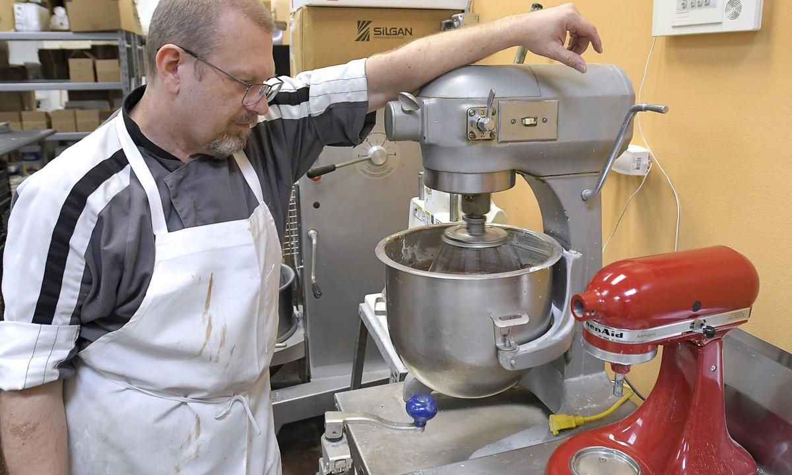

Sweetly Divine owners reminisce as Logan bakery prepares to close
The Logan bakery Sweetly Divine is closing its physical location on May 15 after a Salt Lake City developer declined to renew the business’s lease, according to the owners.
Mark and Marilee Grodkowski made the announcement on Facebook this past Wednesday concerning Woodbury Corporation’s decision.
“This isn’t our choice, but we are moving forward with faith and gratitude to the many loyal customers and friends that have supported us these past 15 years,” the couple wrote about their business, which opened in 2006.
Woodbury Corporation intends to shutter the brick-and-mortar establishment, located at 1309 Main Street, and have another tenant move in, according to Sweetly Divine’s Facebook post.
Amanda Butterfield, a spokeswoman for Woodbury Corporation, provided a prepared statement to The Herald Journal on Friday in response to Sweetly Divine’s announcement.
“There are two sides to this story, but we don’t find it productive to discuss disputes with tenants publicly,” she wrote.
Butterfield did not confirm whether a new business would move in and told the newspaper her company had nothing more to say about Sweetly Divine.
In an email to The Herald Journal, Mark said he is keeping most of his three full-time and three on-call employees.
“All will depends (sic) on how fast we can increase the sales of jams and jellies,” he wrote. “That will be my priority, to make the business grow. I can only do as much as my employees are able to make it with me.”
On Facebook, the Grodkowskis addressed questions from customers about why Sweetly Divine can’t simply find another place to open up shop in Cache Valley, writing, “it’s very costly to do so and we feel that that just isn’t the right choice for us right now.”
Mark estimated that it takes around $150,000 to open a shop like Sweetly Divine.
“When I feel I can spare that kind of money again,” he wrote, “I may consider opening another retail shop.”
Sweetly Divine is not completely down and out, though. Its wholesale operation, selling jams and jellies in bulk to local businesses like Lee’s and Gossner’s, will continue. The exception being that a large portion of their business is “unfortunately unsuitable for retail,” the couple wrote.
In addition to wholesale, Sweetly Divine will continue to sell its products online, the couple stated on Facebook.
The newspaper also inquired about how the pandemic has impacted Sweetly Divine. Mark pointed only to his wholesale business.
“All sales of jams and jellies to all my distributors and locations stopped for five months,” he wrote. “It was very scary time.”
Information about Sweetly Divine and the Grodkowskis was found on the business’s official website.
Mark is a Polish immigrant who was a pastry chef at Jackson Lake Lodge in Grand Teton National Park in 1988, the same year he met his wife.
Five years later, “Mark’s Specialties” was opened, providing pastries to hotels and restaurants in Northern Utah.
But Marilee “craved the country life” and they were both “moved by the small town atmosphere and natural beauty” of Logan while visiting there.
Mark wrote in an email that “we fell in love with the valley.”
Sweetly Divine served pastries at first, but the couple wanted to widen the menu, so they added soup and sandwiches.
“Sometimes people are afraid when they hear ‘jalapeno jellies’ are on the sandwiches. But Mark gives out free samples and gets them hooked,” the website states.
Still, Sweetly Divine has mainly been known for pastries, which Mark touts as “unique to this valley.”
Mark “tried to make them attractive, delicious and at reasonable price,” he wrote in an email. “Some thought I was expensive, but when you consider the time and ingredients, I was always below where the price should be.”
Some time after opening, a “large food distributor” introduced the Grodkowskis to selling their products, including jellies, wholesale. From there, Sweetly Divine started having them at grocery stores and culinary retailers throughout Cache Valley.
“I am hoping that my Jams and Jellies will become more popular and we can grow and be a part of people’s fridge or pantry,” Mark wrote.
Opsahl, K. (2021, March 26). Sweetly divine Owners REMINISCE as logan BAKERY prepares to close. Retrieved March 27, 2021, from https://www.hjnews.com/news/business/sweetly-divine-owners-reminisce-as-logan-bakery-prepares-to-close/article_b4eb3909-ee93-5f2e-abc1-f7d914e27e8e.html